ROSES OS · A Consciousness & Remembrance Ecosystem
ROSES OS · Manual Visual para Professores
Práticas Fundamentais — Todos os Níveis
Teachings by Angelina Ataíde
ROSES OS
2026 · REVIEW EDITION
Manual Visual para Professores
Manual Visual para Professores
Práticas Fundamentais — Todos os Níveis
Acordos e Virtudes
3
Nível 1: Fundação — Práticas Fundamentais
4
Nível 2: Aprofundamento — Energético e Relacional
13
Nível 3: Ensino — Transmissão e Facilitação
22
Um companheiro visual do facilitador para o ensino da Meditação da Rosa.
Manual Visual para Professores · Todos os Níveis
Acordos e Virtudes
Acordos e Virtudes
Antes de começar, todos os participantes honram estes acordos:
Pontualidade, Confidencialidade, Corresponsabilidade, Confiança, Paciência, Empatia e Compaixão.
É Importante Saber
Você receberá o manual em PDF.
Estes ensinamentos fazem parte de uma linhagem energética viva, revelada através da prática direta e da transmissão.
Você não deve tentar ensinar a Meditação da Rosa (apenas para seus filhos menores de 14 anos).
Se você deseja se tornar um Facilitador de Meditação da Rosa, é necessário seguir um caminho de formação através da Leitura de Aura.
A Meditação da Rosa não pode ser aplicada a outras pessoas.
História e Linhagem
A Leitura de Aura surgiu na década de 1960, na Califórnia, canalizada por um norte-americano chamado Lewis S. Bostwick. Fundador do Berkeley Psychic Institute e da Church of the Divine Man, ele canalizou e sistematizou as técnicas e ferramentas enviadas pelos anjos, para auxiliar no processo de evolução da humanidade.
Linhagem: Berkeley Psychic Institute → Anastasia Plunk → Angelina Ataide → ROSES OS
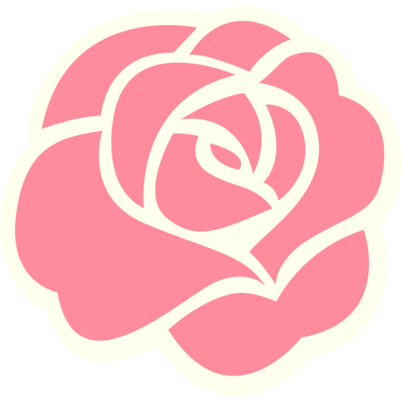
3
Nível 1
Práticas Fundamentais
Slides 1–18
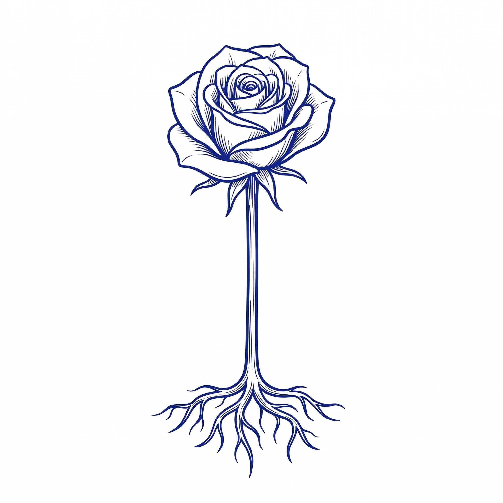
4
1
A Rosa
A Rosa é o símbolo e ferramenta fundamental desta prática — um instrumento energético vivo usado em todos os níveis do trabalho.
2
Postura de Meditação
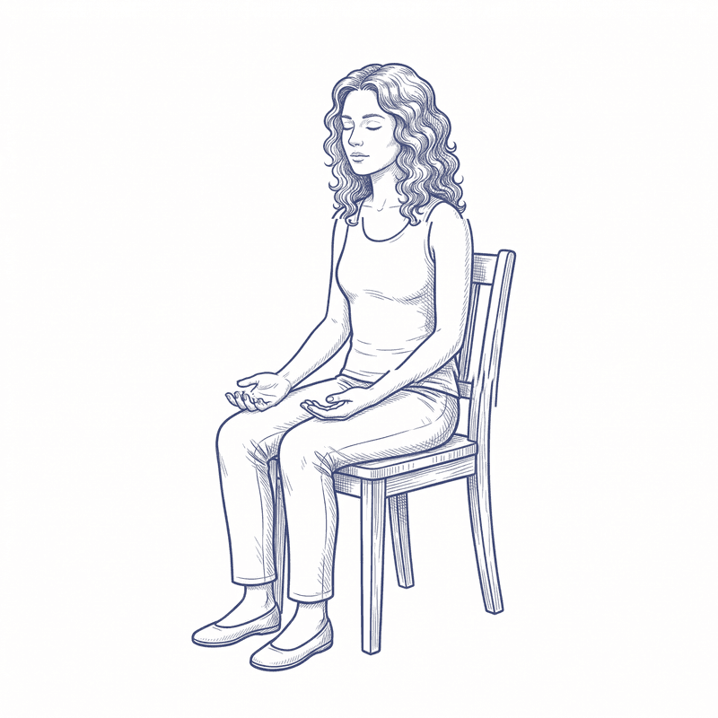
A postura correta de meditação é sentada ereta em uma cadeira. Os pés estão apoiados no chão, as mãos descansando suavemente sobre as coxas ou joelhos, a coluna ereta, os olhos fechados. O corpo está relaxado, porém alerta — enraizado e receptivo.
3
Cordão de Enraizamento
O cordão de enraizamento é uma conexão energética que se estende da base da coluna (primeiro chakra) até o centro da Terra. Ele ancora seu corpo energético ao planeta, proporcionando estabilidade, segurança e um canal para liberar energia indesejada.
4
Sol Dourado
O Sol Dourado é uma ferramenta para reabastecer e restaurar sua própria energia. Visualize um sol dourado radiante acima da sua cabeça. Ele chama de volta sua própria energia vital de onde quer que você a tenha deixado — em pessoas, lugares, situações ou no tempo. Ele preenche você com sua vibração mais elevada.
5
5
Um Exercício para Sentir Sua Aura
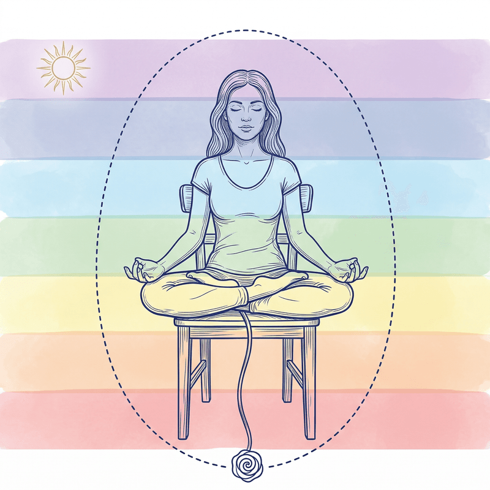
A aura é o campo energético que envolve o seu corpo físico. Este exercício ajuda você a tomar consciência de sua presença, seus limites e sua qualidade. A aura consiste em múltiplas camadas que irradiam para fora do corpo.
6
Expansão do Cordão de Enraizamento
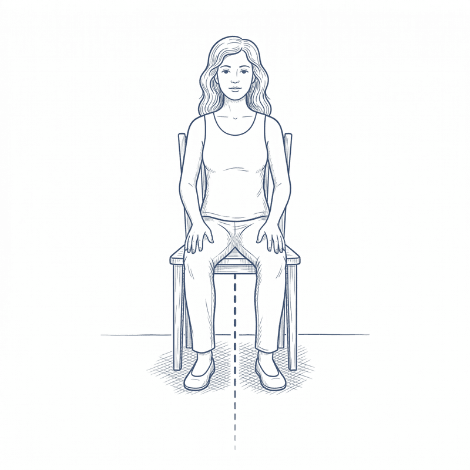
Uma vez que você está consciente da sua aura, a prática do cordão de enraizamento se aprofunda. Você enraíza não apenas o corpo físico, mas também a própria aura — permitindo que todo o campo energético se ancore na Terra.
7
O Sol Dourado Preenche Você
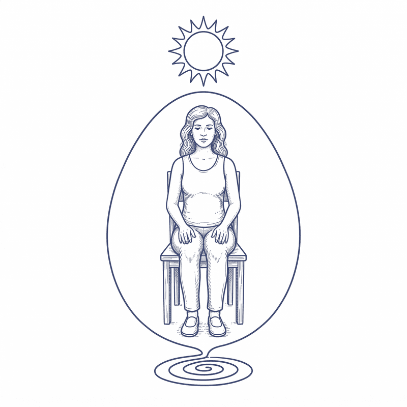
O Sol Dourado acima da coroa derrama luz dourada para baixo, preenchendo toda a aura e o corpo com sua vibração mais elevada. Isso completa a arquitetura energética completa: postura, aura, cordão de enraizamento e sol dourado — todos ativos juntos.
8
Circuito da Energia da Terra
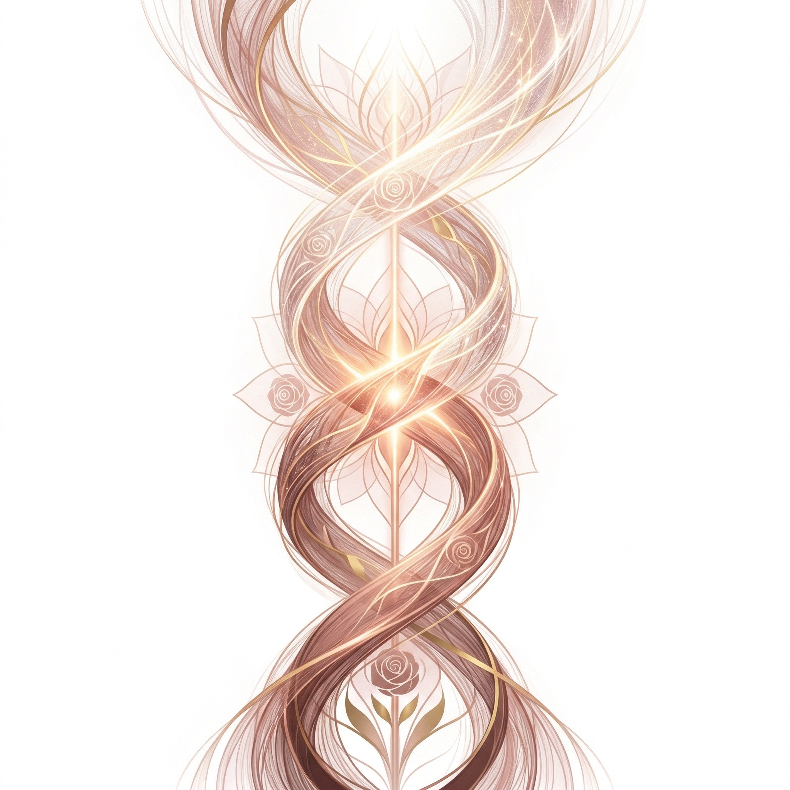
O circuito da Terra é um caminho energético que atrai a energia da Terra para cima através dos pés, subindo pelas pernas e entrando no corpo. Este circuito conecta você à força enraizadora, nutritiva e estabilizadora do planeta.
6
9
Circuito da Energia do Cosmos
O circuito Cósmico é um caminho energético que atrai a energia cósmica para baixo através da coroa da cabeça (7º chakra) e para dentro do corpo. Este circuito conecta você às frequências mais
10
Circuito da Energia do Cosmos e da Terra
Quando ambos os circuitos são ativados simultaneamente, as energias da Terra e do Cosmos fluem juntas através do corpo. A energia da Terra sobe de baixo; a energia Cósmica desce de cima. Elas se encontram e se misturam dentro do corpo, criando um campo unificado de energia equilibrada e integrada.
11
A Rosa (como Ferramenta Energética)
A Rosa é usada como um instrumento energético vivo ao longo de toda a prática. Ela possui raízes (conexão com a fonte), um caule (canal de energia) e uma flor (a ferramenta ativa e radiante). A Rosa
12
Rosas de Proteção, Observação e Separação
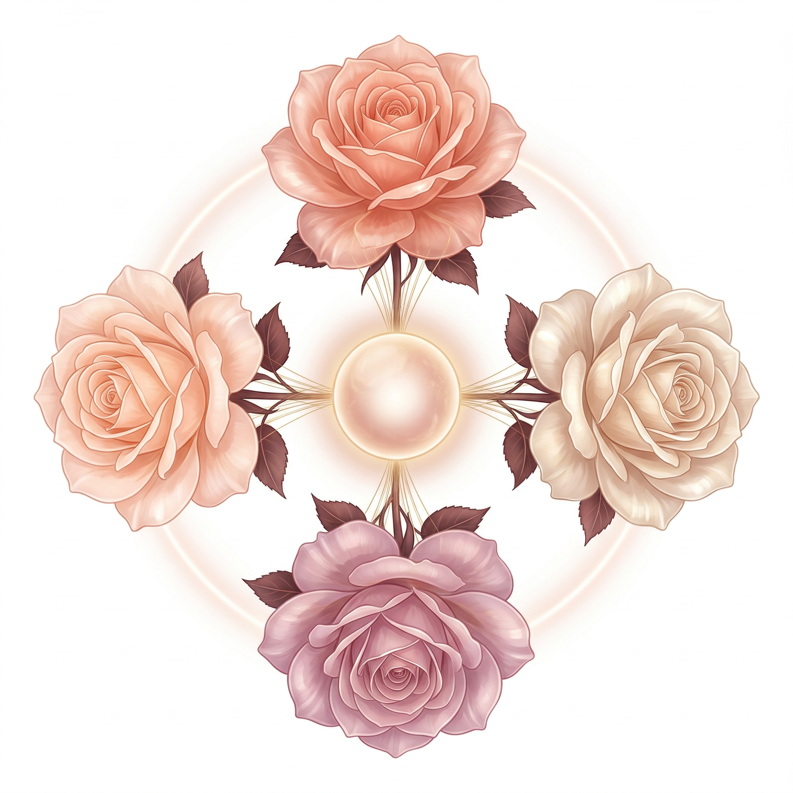
As Rosas são colocadas nas bordas da aura para servirem como sentinelas energéticas. Elas desempenham três funções:
1. Proteção — Elas definem e guardam os limites da sua aura
2. Observação — Elas ajudam você a perceber quais energias estão se aproximando ou interagindo com o seu campo
3. Separação — Elas criam uma distinção energética saudável entre a sua energia e a energia dos outros Three functions: Protection (guard the boundary), Observation (notice approaching energies), Separation (healthy energetic distinction).
7
13
Rosa de Limpeza
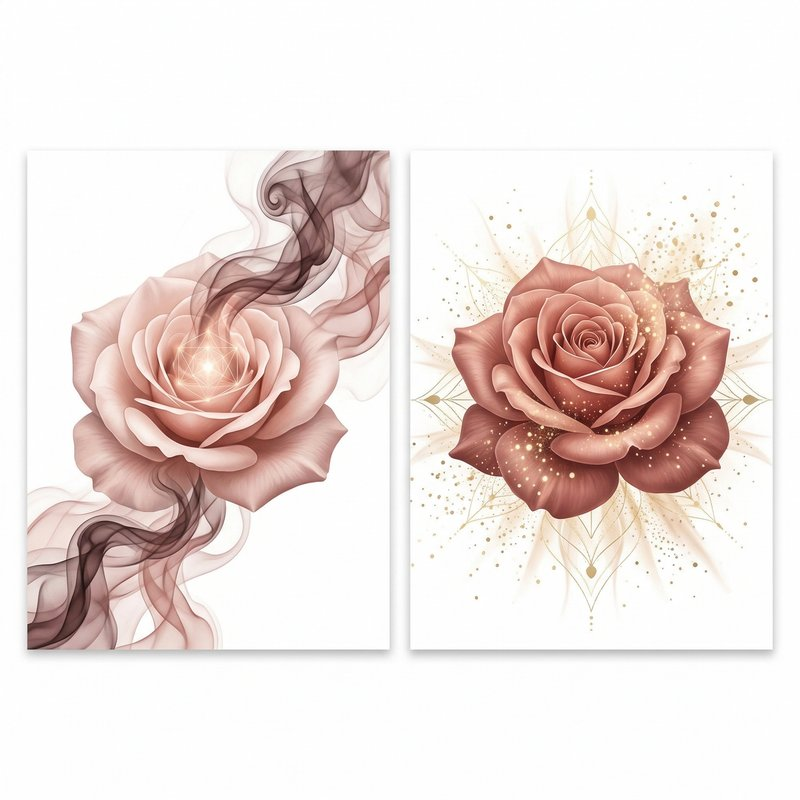
A Rosa de Limpeza é colocada fora da aura. Ela é usada para absorver e transmutar energia estranha ou estagnada do seu campo. Energia que não pertence a você — de outras pessoas, ambientes ou
14
Recuperação Energética de Cada Chakra
Após a limpeza, a Rosa é usada para recuperar sua própria energia que foi deixada ou tomada por outros. A Rosa é enviada como um instrumento para reunir e devolver sua própria energia vital a cada chakra, restaurando plenitude e soberania a cada centro energético. The Rose gathers and returns your life-force energy to each chakra, restoring fullness and sovereignty.
15
Pink Rose Closure
The Pink Rose Closure is offered at the end of the meditation as a gift of well-being. Create an unrooted pink Rose and place yourself or the person inside it, visualizing “Happy, Healthy, Whole, Body, Mind & Soul.”
16
Descarga do Excesso de Energia
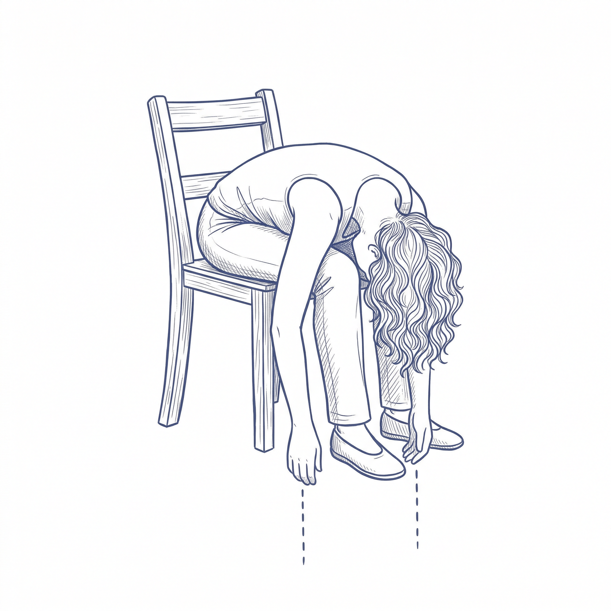
Após meditação profunda ou trabalho energético, o excesso de energia pode se acumular no corpo. Para descarregá-lo, incline-se para frente a partir da posição sentada com as mãos
8
17
Vamos Criar Seu Espaço Sagrado
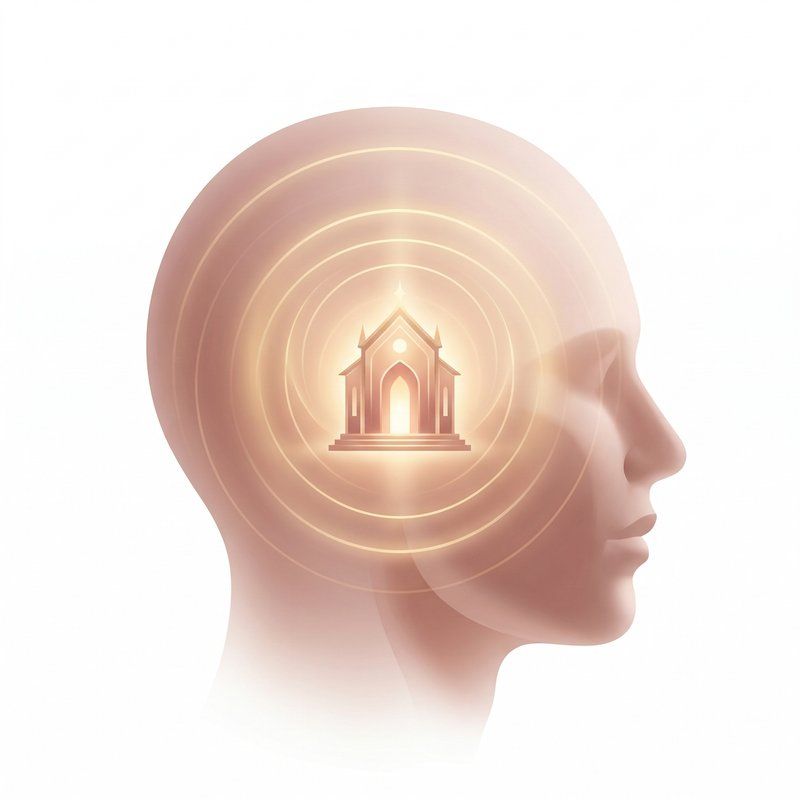
O Nível 2 começa com a criação do seu próprio espaço sagrado — um ambiente energético interno que serve como seu lar de meditação. Este é o espaço a partir do qual todo o trabalho
18
O 6º e o 7º Chakras (Espaço Sagrado)
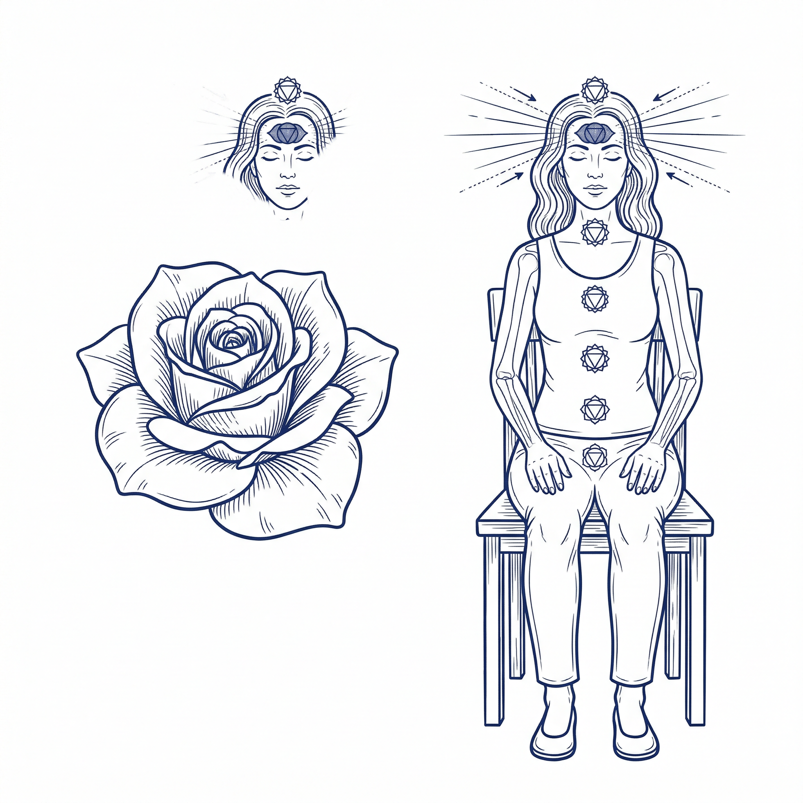
Compreender as localizações e funções dos chakras superiores é essencial para o trabalho do Nível 2: • 6º Chakra (Terceiro Olho) — Localizado no centro da testa, entre e
Nível 1
18 Slides
As práticas essenciais que formam a base de todo o trabalho do ROSES OS. Respiração, corpo, coração e a Meditação da Rosa.
9
8
Circuito da Energia da Terra
O circuito da Terra é um caminho energético que atrai a energia da Terra para cima através dos pés, subindo pelas pernas e entrando no corpo. Este circuito conecta você à força enraizadora, nutritiva e estabilizadora do planeta.
9
Circuito da Energia do Cosmos
The Cosmic circuit draws cosmic energy downward through the crown of the head (7th chakra) and into the body. This connects you to the higher frequencies of universal consciousness, inspiration, and spiritual guidance.
10
10
Circuito da Energia do Cosmos e da Terra
Quando ambos os circuitos são ativados simultaneamente, as energias da Terra e do Cosmos fluem juntas através do corpo. A energia da Terra sobe de baixo; a energia Cósmica desce de cima. Elas se encontram e se misturam dentro do corpo, criando um campo unificado de energia equilibrada e integrada.
15
Pink Rose Closure
The Pink Rose Closure is offered at the end of the meditation as a gift of well-being. Create an unrooted pink Rose and place yourself or the person inside it, visualizing “Happy, Healthy, Whole, Body, Mind & Soul.”
11
17
Vamos Criar Seu Espaço Sagrado
O Nível 2 começa com a criação do seu próprio espaço sagrado — um ambiente energético interno que serve como seu lar de meditação. Este é o espaço a partir do qual todo o trabalho
18
O 6º e o 7º Chakras (Espaço Sagrado)
Understanding the locations and roles of the upper chakras: 6th Chakra (Third Eye) at the center of the forehead; 7th Chakra (Crown) at the top of the head.
Espaço Sagrado
12
Nível 2
Energético e Relacional
Slides 19–38
13
19
Vamos Preparar Seu Espaço Físico
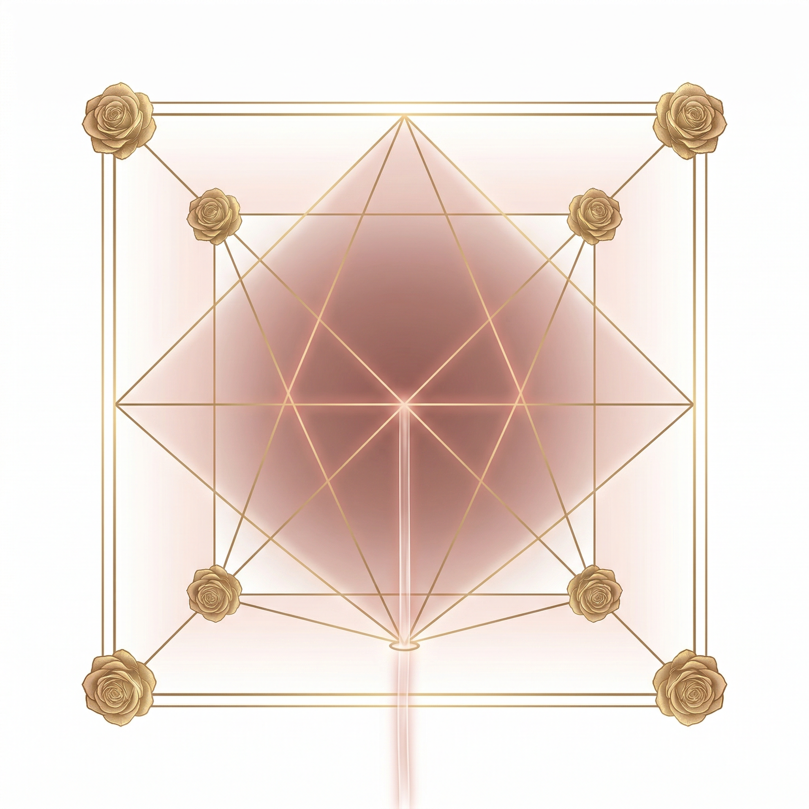
Antes da meditação, prepare seu ambiente físico para apoiar o trabalho energético. O espaço externo deve espelhar a intenção interna: limpo, claro, silencioso e intencionalmente mantido.
20
Proteção do Espaço
O espaço físico de meditação é protegido pela criação de uma grade energética usando rosas. Rosas douradas são colocadas nos quatro cantos (e acima/abaixo) do espaço, conectadas por linhas de energia dourada formando uma estrutura geométrica sagrada — um recipiente para o trabalho. Golden roses are placed at the four corners, connected by lines of golden energy forming a sacred geometric structure.
21
Limpeza do Espaço
Uma vez que o espaço está protegido, ele é limpo. Uma grande Rosa de Limpeza é colocada acima da grade, e a energia dourada flui para baixo por toda a estrutura, limpando todas as energias estranhas, estagnadas ou perturbadoras do espaço. A large Cleansing Rose is placed above the grid, and golden energy pours downward through the entire structure, clearing all foreign energies.
22
Tomando Posse do Seu Espaço
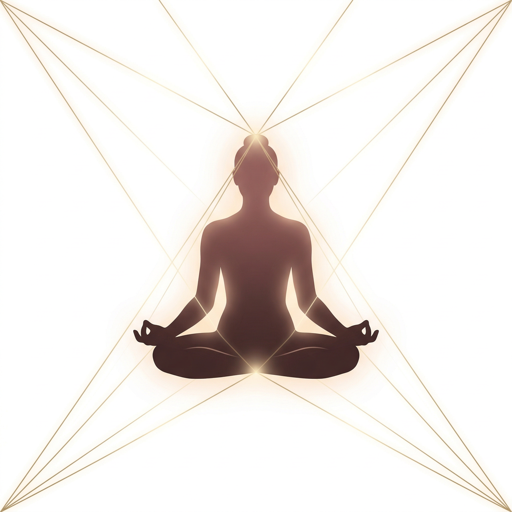
Após a proteção e a limpeza, você toma posse do espaço. Este é um ato de soberania energética — declarando o espaço como seu, preenchendo-o com sua própria energia e intenção. O espaço se torna uma extensão da sua aura e da sua prática. This is an act of energetic sovereignty — declaring the space as yours, filling it with your own energy and intention.
14
23
Vamos Falar Sobre Chakras
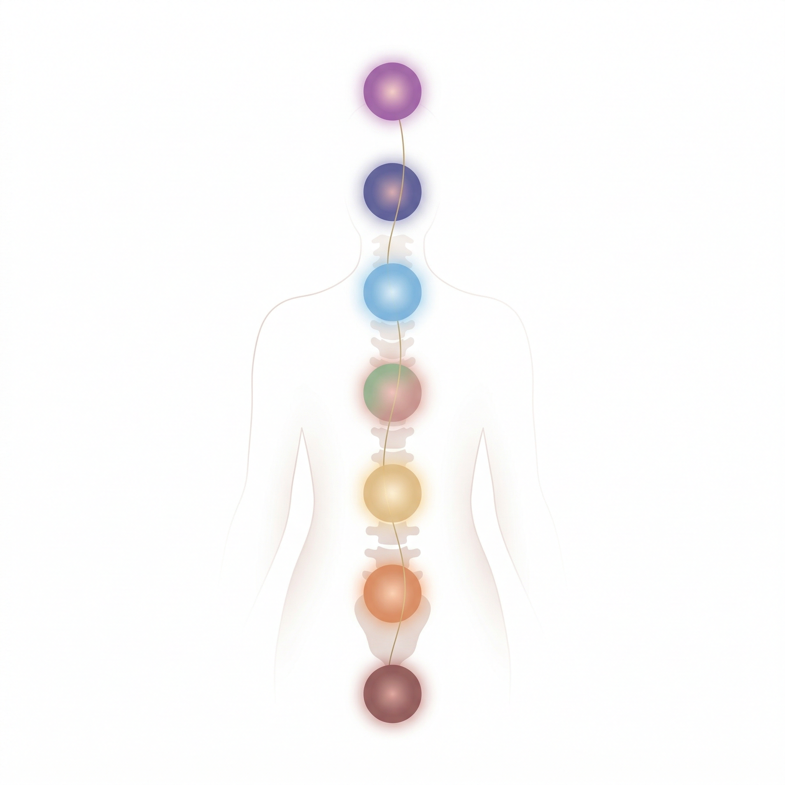
O sistema de chakras é a anatomia energética do corpo humano. Existem sete chakras primários, cada um governando aspectos específicos da vida física, emocional, mental e espiritual.
24
Os Sete Chakras
7. Coroa — Topo da cabeça
6. Terceiro Olho — Centro da testa
5. Garganta — Garganta
4. Coração — Centro do peito
3. Plexo Solar — Abdômen superior
2. Sacral — Abdômen inferior
1. Raiz — Base da coluna
15
25
Chakra Raiz
Muladhara
Elemento: Earth · Statement:I AM
Foco: Estabilidade — Segurança — Corporificação
26
Chakra Sacral
Svadhisthana
Elemento: Water · Statement:I FEEL
Foco: Emoções — Criatividade — Prazer
27
Chakra do Plexo Solar
Manipura
Elemento: Fire · Statement:I CAN
Foco: Poder Pessoal — Autoestima — Determinação
28
Chakra do Coração
Anahata
Elemento: Air · Statement:I LOVE
Foco: Amor — Compaixão — Conexão
16
29
Chakra da Garganta
Vishuddha
Elemento: Ether/Sound · Statement:I SPEAK AND I LISTEN
Foco: Comunicação — Verdade — Autenticidade
30
Chakra do Terceiro Olho
Ajna
Elemento: Light · Statement:I SEE
Foco: Imaginação — Percepção — Visualização
31
Chakra da Coroa
Sahasrara
Elemento: Thought · Statement:I KNOW
Foco: Conexão Espiritual — Sabedoria Interior — Estados Superiores de Consciência
17
32
Limpeza de Cada Camada da Aura
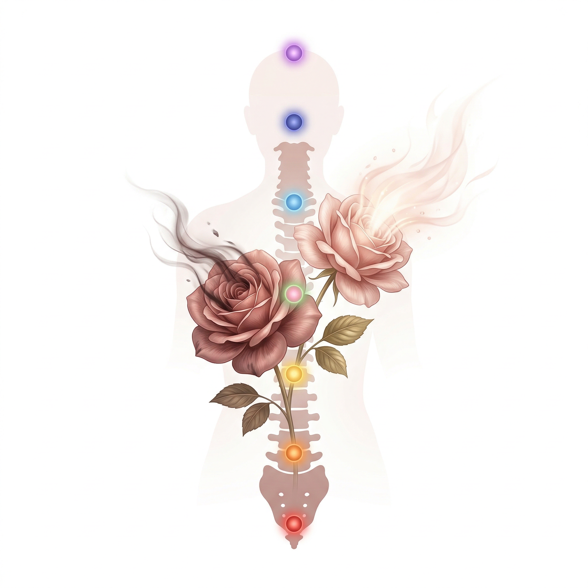
A aura é composta por sete camadas, cada uma correspondendo a um chakra. No Nível 2, cada camada é individualmente limpa da mais externa para a mais interna:
7. 7ª camada da Aura
6. 6ª camada da Aura
5. 5ª camada da Aura
4. 4ª camada da Aura
3. 3ª camada da Aura
2. 2ª camada da Aura
1. 1ª camada da Aura Each layer is individually cleansed.
33
Limpeza de Cada Chakra
Cada chakra individual é limpo usando rosas. As rosas abordam duas dimensões: • Dinâmicas do
34
Recuperação Energética de Cada Chakra
Após a limpeza, o processo de recuperação energética é repetido em um nível mais profundo. A Rosa é enviada para reunir e devolver sua própria energia a cada chakra individual, restaurando soberania, vitalidade e integridade a cada centro energético.
35
Golden Sticky Roses — Phase 1
Rosas douradas adesivas são colocadas em cada um dos sete chakras, extraindo
18
36
Golden Sticky Roses — Phase 2
Rosas douradas adesivas são colocadas nas articulações e extremidades do corpo — ombros, cotovelos,
37
Golden Sticky Roses — Phase 3
Rosas douradas adesivas são colocadas por todo o corpo — cobrindo o tronco,
38
Golden Sticky Roses — Phase 4
Depois que as rosas douradas adesivas realizaram seu trabalho, uma grande Rosa Dourada aparece acima da cabeça. Toda a
Rosas Douradas Adesivas
Nível 2
20 Slides
Práticas avançadas para a consciência do corpo sutil, alquimia emocional e coerência relacional.
19
19
Vamos Preparar Seu Espaço Físico
Antes da meditação, prepare seu ambiente físico para apoiar o trabalho energético. O espaço externo deve espelhar a intenção interna: limpo, claro, silencioso e intencionalmente mantido.
20
Proteção do Espaço
O espaço físico de meditação é protegido pela criação de uma grade energética usando rosas. Rosas douradas são colocadas nos quatro cantos (e acima/abaixo) do espaço, conectadas por linhas de energia dourada formando uma estrutura geométrica sagrada — um recipiente para o trabalho. Golden roses are placed at the four corners, connected by lines of golden energy forming a sacred geometric structure.
20
21
Limpeza do Espaço
Uma vez que o espaço está protegido, ele é limpo. Uma grande Rosa de Limpeza é colocada acima da grade, e a energia dourada flui para baixo por toda a estrutura, limpando todas as energias estranhas, estagnadas ou perturbadoras do espaço. A large Cleansing Rose is placed above the grid, and golden energy pours downward through the entire structure, clearing all foreign energies.
22
Tomando Posse do Seu Espaço
Após a proteção e a limpeza, você toma posse do espaço. Este é um ato de soberania energética — declarando o espaço como seu, preenchendo-o com sua própria energia e intenção. O espaço se torna uma extensão da sua aura e da sua prática. This is an act of energetic sovereignty — declaring the space as yours, filling it with your own energy and intention.
21
Nível 3
Transmissão e Facilitação
Slides 39–44
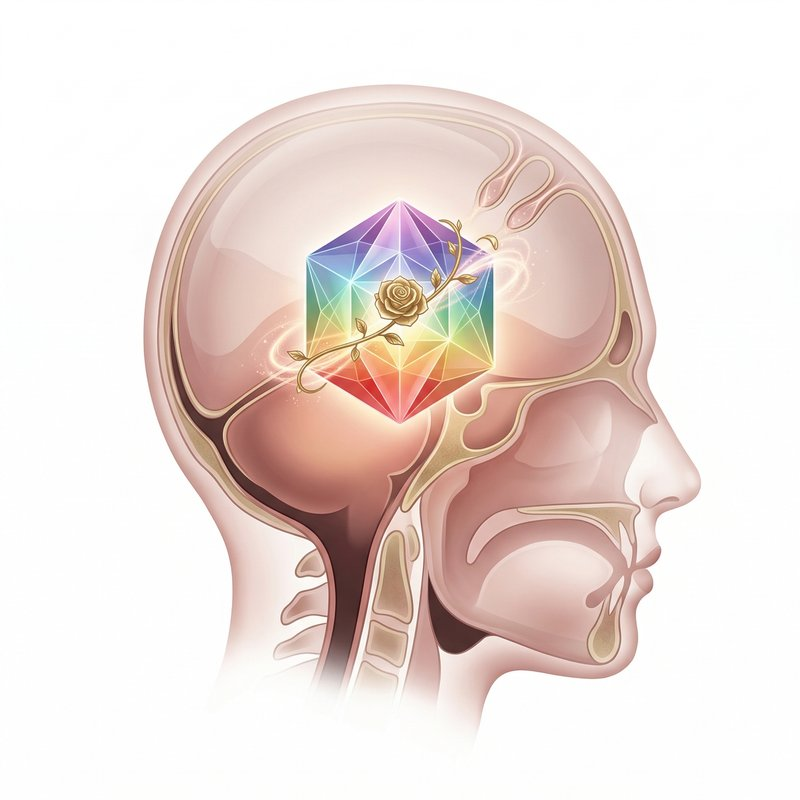
22
39
O Analisador
O Analisador é uma ferramenta avançada introduzida no Nível 3. É um ponto energético localizado na parte de trás da cabeça, na base do crânio (a crista
40
O Analisador e o Espaço Sagrado
Uma referência combinada mostrando o Analisador em relação ao espaço sagrado. Esta imagem ilustra como o Analisador — o ponto energético na base do crânio — opera dentro do contexto do espaço sagrado protegido e purificado estabelecido no Nível 2. Os dois trabalham juntos: o espaço sagrado fornece o recipiente, e o Analisador fornece a ferramenta perceptiva para leitura e discernimento energético mais profundos. The sacred space provides the container, the Analyzer provides the perceptive tool.
41
Bastão de Acordos
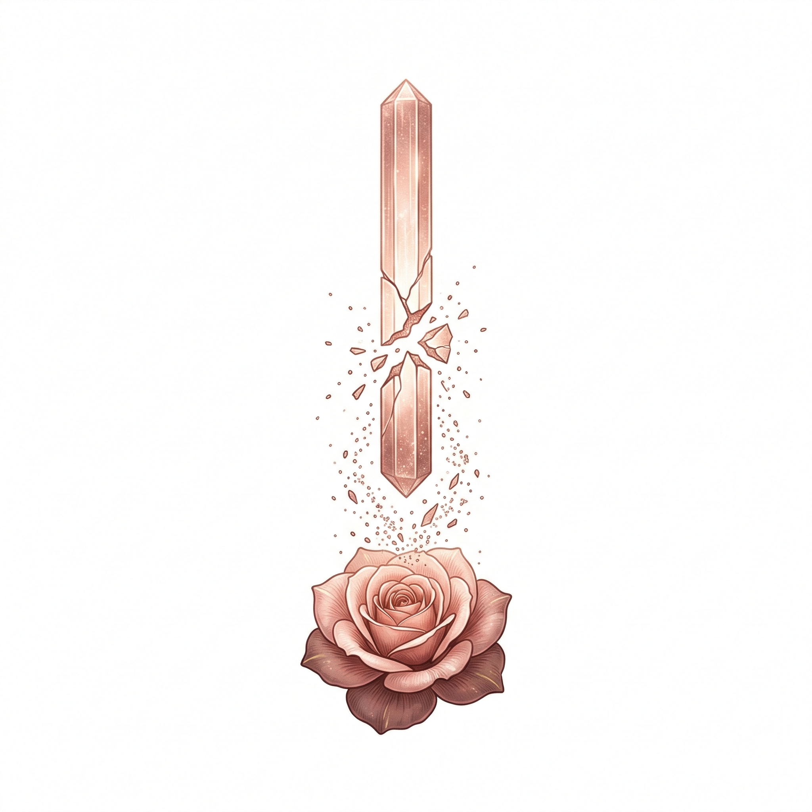
Uma relação só pode se manifestar no mundo material se for sustentada por um acordo espiritual. Tais acordos são formados com o consentimento de ambas as partes em nível
42
Cortar Laços Energéticos
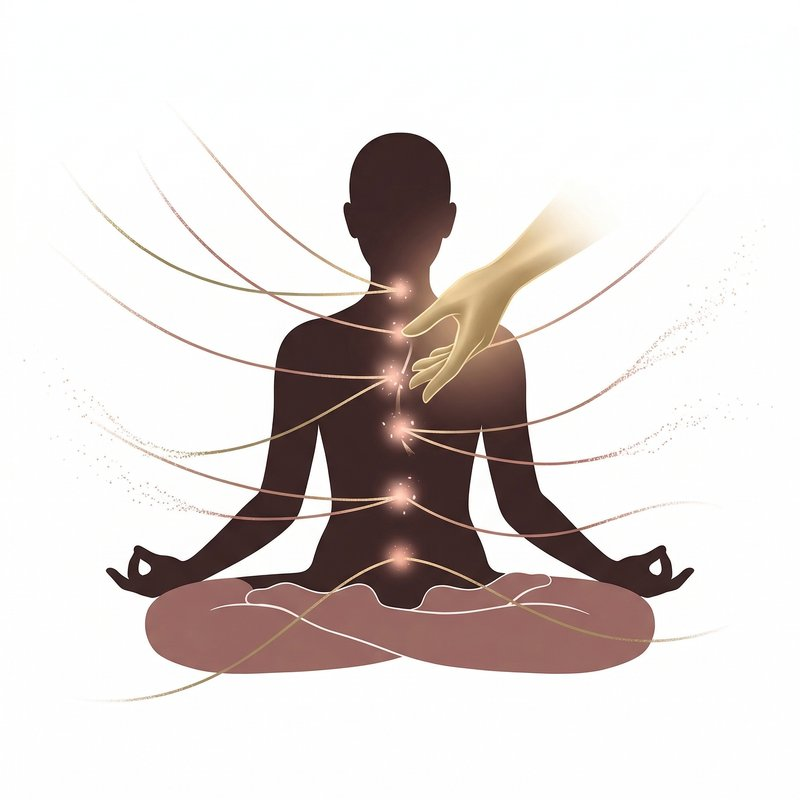
Participamos de interações energéticas com os outros constantemente — quando os vemos, os ouvimos, os tocamos, e até quando pensamos neles. Quando laços energéticos são formados, nossas auras se conectam através dessas ligações, permitindo que a energia flua entre nós. É por isso que muitas vezes conseguimos sentir o que está acontecendo com pessoas próximas, mesmo à distância.
Quando os relacionamentos chegam ao fim, podemos ser profundamente afetados pelas energias que continuam a nos alcançar através desses vínculos. Por essa razão, é importante saber como cortá-los conscientemente:
• Feche os olhos
• Visualize sua aura com laços saindo de seus chakras
• Coloque sua mão dominante sobre a 7ª vértebra cervical, localizada na junção do pescoço e costas, ao nível do 5º chakra
• Tenha a intenção de que sua mão tem o poder de cortar todos os laços
• Faça o movimento de corte sob seu 1º chakra, colocando sua mão na cadeira onde está sentado
Também podemos cortar os laços quando o relacionamento não terminou, mas sentimos que precisamos de mais neutralidade. Esses laços se reformam muito rapidamente quando nos reconectamos com a pessoa. When energetic cords are formed, our auras connect through these ties. It is important to know how to consciously cut them.
23
43
Rosa de Recuperação Pós-Intimidade / Sexual
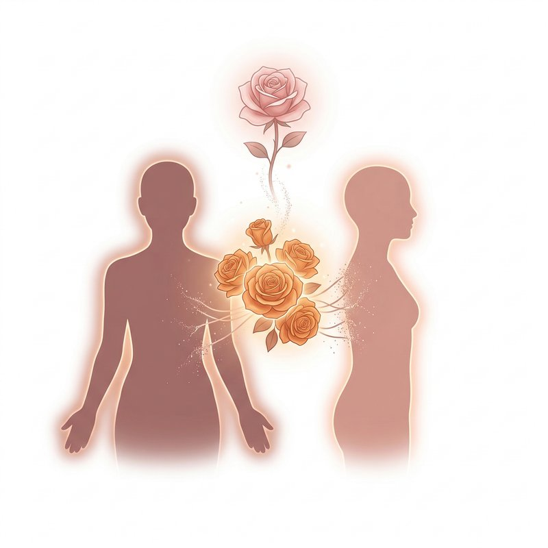
Após a relação sexual, se você deseja recuperar qualquer energia que possa ter deixado com a outra pessoa e devolver qualquer energia que ela possa ter deixado com você, siga
44
Mock Up (Técnica de Manifestação)
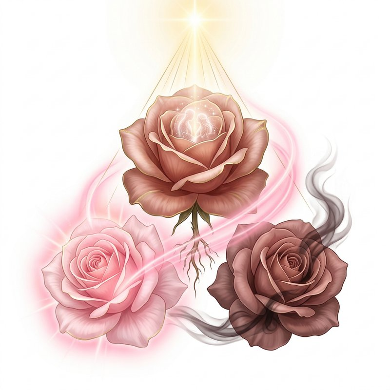
O Mock Up é uma técnica para manifestar situações ou resultados no plano físico. Deve ser usado apenas para si mesmo; não pode ser
Nível 3
6 Slides
Práticas e princípios para manter o espaço, transmitir o trabalho e servir como guardião da linhagem.
24
A Rosa é uma tecnologia de lembrança —
uma prática viva que te reconecta
com a inteligência já presente
no seu corpo, na sua respiração,
e no seu ser.